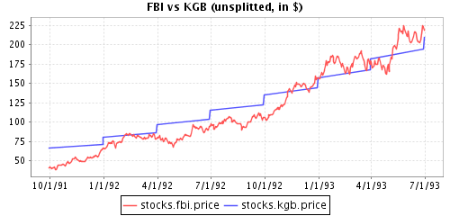

CrNiCKL Demo - README_stox
2012-07-17/jpv
Copyright 2012 Hauser Olsson GmbH.
Licensed under the Apache License, Version 2.0 (the "License");
you may not use this file except in compliance with the License.
You may obtain a copy of the License at
http://www.apache.org/licenses/LICENSE-2.0
Unless required by applicable law or agreed to in writing, software
distributed under the License is distributed on an "AS IS" BASIS,
WITHOUT WARRANTIES OR CONDITIONS OF ANY KIND, either express or implied.
See the License for the specific language governing permissions and
limitations under the License.
Thank you for your interest in CrNiCKL.
CrNiCKL (pronounced chronicle
) is a database for time series running on top of
SQL and (soon) NoSQL systems.
This note explains how to run the stox demo in crnickl-demo-1.1.1.jar
(or a later version of the archive).
The archive is large because all required third party libraries are included.
The command line syntax assumes Linux, but things are kept simple
and no special knowledge is required, except some familiarity with Java.
Of course, to run the demos, you need to have basic Java tools installed.
A required prelimary step is to extract all libraries from the archive
(the ls command lists the directory before and after):
$ ls
crnickl-demo-1.1.1.jar
$ jar xf crnickl-demo-1.1.1.jar lib
$ ls -1 lib
batik-awt-util.jar
batik-svggen.jar
batik-util.jar
crnickl-jdbc-1.1.0.jar
hsqldb.jar
jcommon-1.0.16.jar
jfreechart-1.0.13.jar
sqltool.jar
t2-1.1.4.jar
The t2-1.1.4.jar and crnickl-jdbc-1.1.0.jar archives are our time series libraries.
The hsqldb archive contains the HyperSQL JDBC driver and sqltool is used to set up the
database from scratch. HyperSQL is useful in a demo like this because it can run in memory, and
there is nothing to set up before running the demo.
The jfreechart and jcommon archives are used for drawing charts.
The batik libraries are from Batik 1.7 and are used for generating SVG files.
There are two demos: a text-based demo which sets up a toy database for stocks and exchange rates,
and a graphical demo which does the same then generates a few charts. Both demos
print a directory of the database on standard output. The demos use parameter files
which are on the class path inside the archive. It is possible to extract these files,
to modify them, and to run the demos with some parameters modified.
To run the text-based demo:
$ java -cp crnickl-demo-1.1.1.jar ch.agent.crnickl.demo.stox.StocksAndForexDemo Resources/stocksdb-text.parm
Database : sa@jdbc:hsqldb:mem:demodb
Value types (with base type) :
+-- Currency (Currency)
| +--
| +-- CNY - Yuan renminbi
| +-- FUM - Funny money
| +-- GBP - Pound sterling
| +-- JPY - Japanese yen
| +-- USD - US dollar
[etc. etc. etc.]
stocks ("Stock market data", schema: Stocks)
+-- attribute Ticker=null
+-- attribute Currency=
stocks.fbi ("Foo & Bar, Inc")
+-- attribute Ticker=FBI
+-- attribute Currency=USD
+-- series price (close price, range: [1991-09-30, 1993-06-30])
+-- sample 1991-09-30=41.0, 1991-10-01=42.25, 1991-10-02=41.25, ..., 1993-06-30=54.75
+-- series volume (total volume traded, range: [1991-09-30, 1993-06-30])
+-- sample 1991-09-30=7.71696E7, 1991-10-01=8.07984E7, 1991-10-02=1.14984E8, ..., 1993-06-30=5.4558E7
+-- series splits (stock splits, range: [1992-03-23, 1993-03-22])
+-- sample 1992-03-23=2.0, 1993-03-22=2.0
stocks.kgb ("Kolossale Geschäftsbank")
+-- attribute Ticker=KGB
+-- attribute Currency=FUM
+-- series price (close price, range: [1991-09-30, 1993-06-30])
+-- sample 1991-09-30=70.0, 1991-10-01=NaN, 1991-10-02=NaN, ..., 1993-06-30=140.0
+-- series volume (total volume traded, range: [])
$
To run the graphical demo:
$ java -cp crnickl-demo-1.1.1.jar ch.agent.crnickl.demo.stox.StocksAndForexDemo Resources/stocksdb-graphic.parm
Database : sa@jdbc:hsqldb:mem:demodb
[etc. etc. etc.]
/tmp/FBI_KGB_raw.svg
/tmp/FBI_KGB_in_USD.svg
/tmp/FBI_KGB_in_USD_adj.svg
$
The program prints the names of the output files containing the charts.
Inspect the output files with a viewer or your usual browser. If you use Firefox, you
should be able to view the SVG file. Here is on0.e of the PNG files:

Clicking on the PNG file navigates to the SVG file. If you can view it with your browser,
you should try to resize the window and notice that the image remains perfect.
Jean-Paul Vetterli
vetterli@gmail.com
{kind=link}